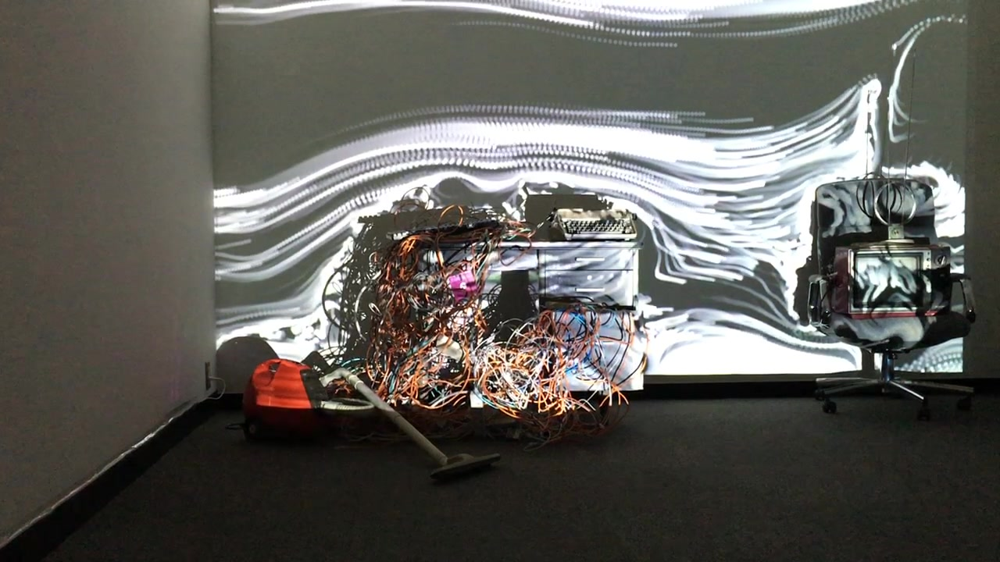
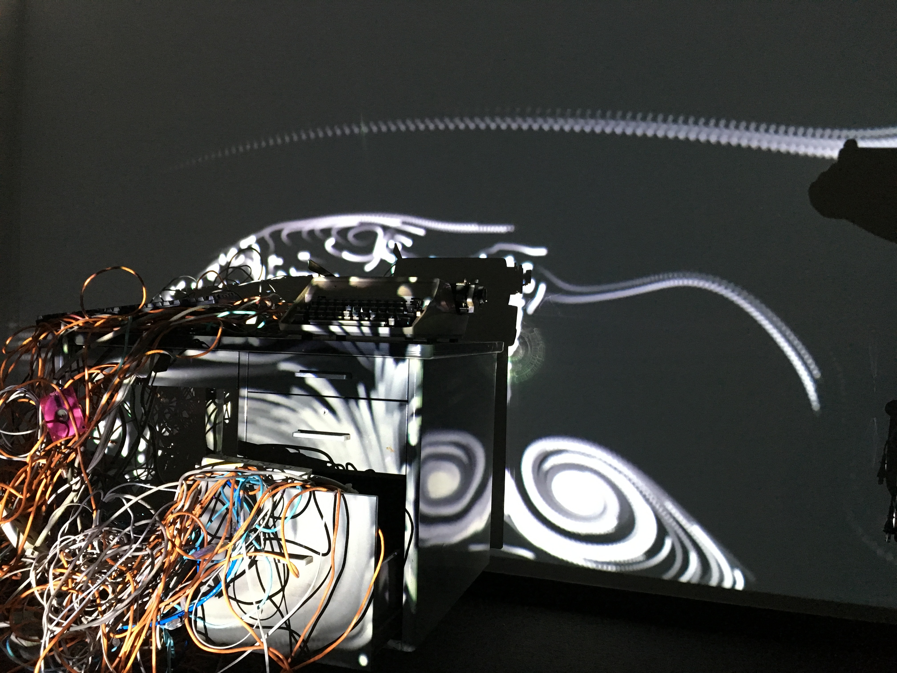
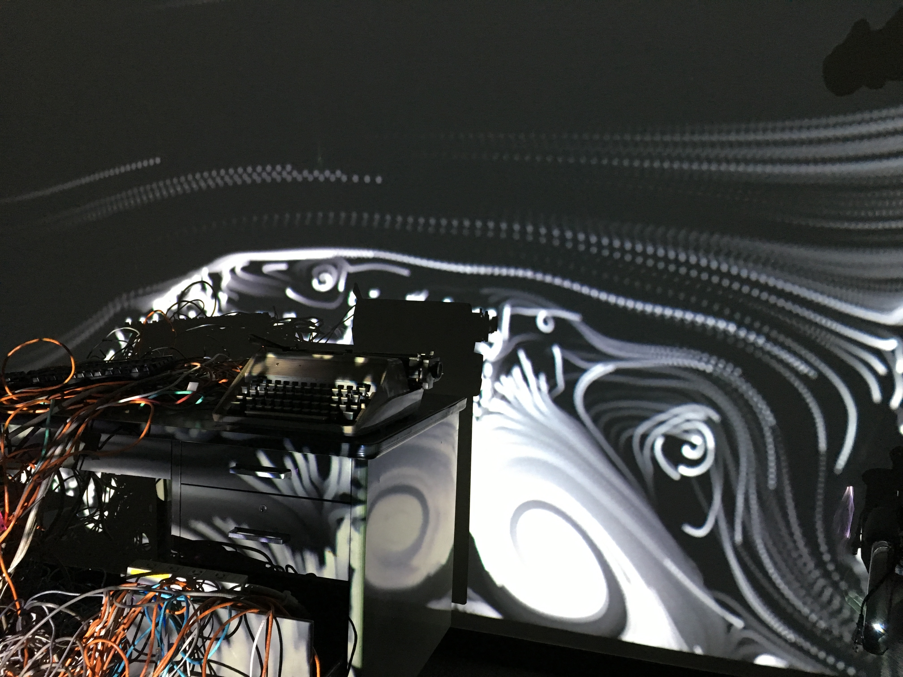
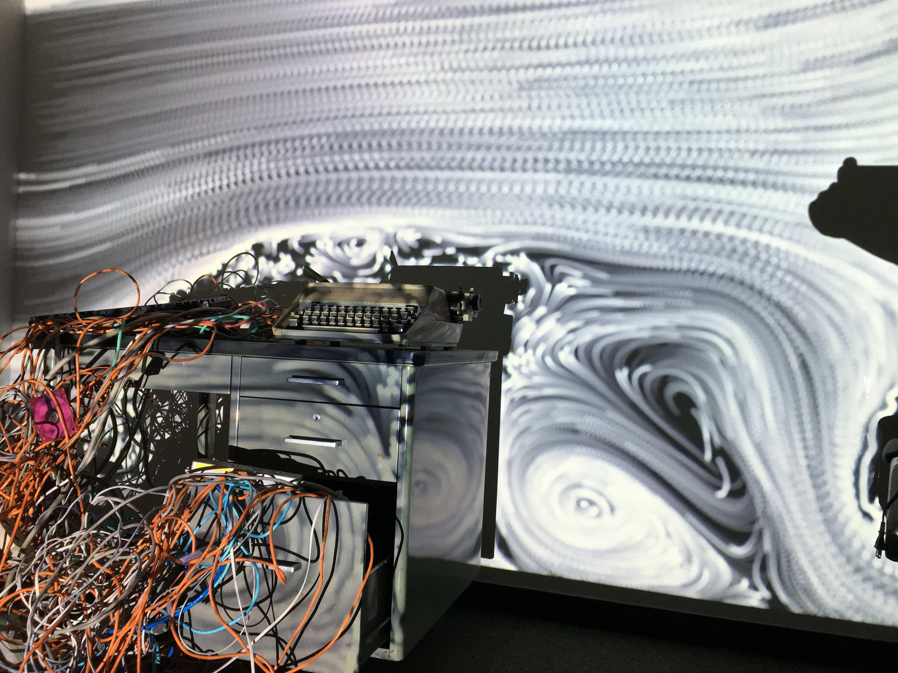

Akira Wakita, Furnished Fluid #3
The third work of Furnished Fluid series by Akira Wakita.
The exhibition place was a abandoned building in Kabutocho. By gathering the discarded industrial products, we build up the graveyard of the 20th century industrial design.
, video installation




Credit
Artist: Akira Wakita
Assistant: Ken Ishii